01. 前言简介
铁骑学说: 自从铁骑被创造出来, 并在军事任务中证明了其独特的战略价值后, 各大政权便围绕它展开了一场新的军备竞赛, 各种与铁骑相关的技术和装备不断涌现, 然而, 科技的进步和成本的投入并不总是与战略意义成正比, 无数案例都表明了, 只有根据战局环境进行有效搭配, 并符合驾驶员的作战逻辑, 才能取得胜利, 因此, 作为铁骑队长的你, 必须深入了解这些因素, 才能够成为一名优秀的指挥官…;
探索组合: 铁骑装配也是游戏的亮点和玩法, 这毕竟是个射击游戏, 如何构筑出强大且有趣的机甲亦是它的乐趣, 可以说你的大部分工作, 都是围绕着如何装备展开的, 你需要了解不同武器的特性, 熟悉小队各驾铁骑的性能, 掌握驾驶员的个性特长, 分析战场的天气地形要素, 评估敌军的战力强弱特点, 针对不同作战目标采用不同策略, 才能在这场残酷的战争中常胜不败, 而本章便会围绕着这一切来展开.
02. 武器短评
游戏提供了数十种不同的武器, 涵盖了远程/近战等多个种类, 根据子弹类型还能被进一步细分为动能/高爆/喷射/电弧等多个类别, 它们当中的绝大多数还可以进一步升级, 并且有数十种功能各异的配件可选用, 甚至能将不同类别的武器进行融合, 总之, 武器系统是丰富且庞大的, 下面会针对不同类别的武器做个简评, 以便帮你快速建立起一个全面的认知, 关于武器更多的细节, 可以查阅 武器列表.html;
————
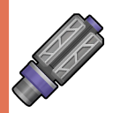
步枪类: 包括老式步枪/老式步枪A1/制式步枪/制式步枪A3/制式步枪B2/制式步枪B1/破甲步枪, 它们是最基础的武器, 各方面的数据都中规中矩, 既没有明显的短板, 但也没什么特色, 硬是要说优点, 恐怕也只剩下便宜了, 无论是弹药费或维修费都相当低廉, 在资金紧张时或许会有妙用, 尽管通过合理的搭配, 这些步枪也能用到中后期, 只是玩起来略显乏味, 它们更多的时候会被当做其他武器的维修材料;
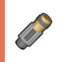 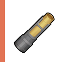 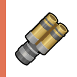
霰弹类: 包括散弹枪/猎鹿弹/速射散弹/双管散弹枪/泵动炮, 它们共同的特征是每次扣动扳机都会发出多颗子弹, 呈现出扇形的范围杀伤, 这类武器在初期尤其好用, 特别合适对付敏捷或集群的敌人, 无需精确的瞄准, 操控起来也较为省心, 但它们破甲能力不足, 中后期面对重甲单位会显得乏力, 如果想继续使用, 就得考虑安装破甲配件了, 或者是安装冰火模块, 打出装甲融化效果, 可降低敌人 80% 护甲;
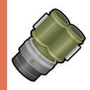 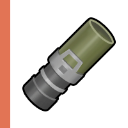
高爆类: 包括加农炮/榴散炮/速射榴弹, 高爆类武器的特点是, 当炮弹击中了敌人或障碍物, 会产生范围性爆炸伤害, 而受到爆炸伤害会导致机体进入短暂的眩晕状态, 因而是对付群集敌人和重甲单位的利器, 但它们的缺陷也很明显, 就是不好打那些体积小且移动迅猛的敌人, 瞄准始终是个难以解决的问题, 如果你选用这种武器, 最好是在副手配备一把散弹枪或冲锋枪, 针对不同的环境和敌人选择性开火;
————
冲锋枪: 包括冲锋枪/冲锋枪B2/冲锋枪A2, 冲锋枪一直是个不起眼的类别, 因为它们的伤害和破甲都不行, 所以被众多玩家所忽视, 但实际上它们拥有最高的装弹量和极限的射击速度, 如果你的电脑性能足够高(射击的最高速度和显示器的刷新频率挂钩), 可以考虑为它们搭配一些元素反应配件, 走爆炸和控场的路线, 则这些武器也能有不俗的表现, 尽管上限不高, 但成型后玩起来却有颇为有趣, 值得一试;
狙击枪: 包括轻型狙/重型狙/速射炮, 狙击枪是高伤害的代表, 而且它们的射程也普遍较远, 这可以让我们在敌军的攻击距离外就解决对方, 因而是不错的决战武器, 但它们的缺陷也十分明显, 那就是射速低, 装弹时间长, 且需要精确瞄准的操作, 这使得它们在面对小型且敏捷的敌人时力不从心, 一旦被对方贴身就很麻烦了, 如果你使用它们, 最好是尝试融合散弹类武器, 获得子弹分裂的功能以填补短板;
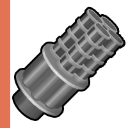
机枪类: 包括轻机枪/重机枪/火神炮, 机枪类是介于冲锋枪和狙击枪之间的武器, 弹夹大/射速快/射程远/伤害高, 尽管没什么属性是最顶尖的, 却很少有敌人能顶住它们的扫射, 当然缺陷也很明显, 那便是换弹时间特别长且槽位需求高, 除了圣骑士号, 其他铁骑都无法双持, 如果你选用该武器, 应该把装配的重点放在降低它的换弹时间上, 保证不会有太长的输出空档期, 持续性的火力覆盖最能使人安心;
————
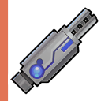 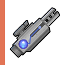
元素枪: 包括水弹枪/磁电冲锋枪/磁电狙击步枪, 元素枪的面板参数都比较差, 它们的主要价值在于子弹可自动附加元素效果, 例如水弹枪可为敌人添加潮湿的 Debuff, 磁电枪可为敌人添加麻痹的 Debuff, 但如果子弹被抵抗(破甲失败)则不会生效, 总的来讲, 这类武器的价值都不是很大, 因为喷水枪或水炸弹也可以实现潮湿, 为动能武器添加电磁模块也能打出麻痹, 也就没有必要贪图它们的效果特性了;
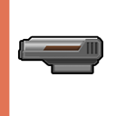 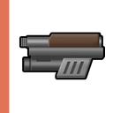
手枪类: 包括制式手枪/微型手炮, 手枪类武器的最大特点是槽位需求数低, 它们的即便升到最高级, 槽位需求也只有 6, 也就是说, 几乎所有机体, 包括作战单元和无人机都可以装备, 甚至也能作为某些主力机体的备用副手武器, 主打的就是一个谁都能用, 然而, 槽位需求少, 也就意味着无法安装太多的武器模块, 这也就决定了它们的上限也不够高, 应急或打个辅助或许还行, 要当主力武器就不够格了;
盾牌类: 包括防爆盾, 防爆盾是当前唯一的远程防御武器, 它的槽位数为 0, 所以无法装备任何配件, 也因此它没有任何的槽位限制, 你可以把它装到任意机体上, 甚至是无人机也可以带着它, 值得一提的是, 即便主力机体实现了重武器的双持, 也还是可以再装一个防爆盾(只要你不嫌重), 这个盾牌拥有 500 的穿甲抵抗, 这就意味着敌方的动能武器在正面几乎无法破防, 不过当你举起它时, 也无法攻击了;
————
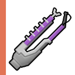 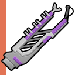 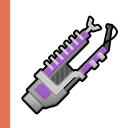
电弧类: 包括加电弧枪/长距电弧枪/聚焦电弧枪/放电炮, 电弧类武器的伤害普遍都不是很高, 但它们的优势在于射出的电弧会自动在多个敌人之间跳转, 这就免去了瞄准的麻烦, 在对付小型且高速的敌人时效果拔群, 也可以说是最不考究操作的武器了, 不过这类武器难以穿透能量护盾(伤害仅剩 20%), 如果你选用这种武器, 最好是通过融合射线武器来得到"电弧折返核心"模块, 它可以提升对护盾的伤害;

射线类: 包括切割射线/长焦射线/聚焦射线/长距聚焦射线, 射线类武器和电弧类武器有不少相似之处, 例如它们都能无视护甲, 却难以穿透能量护盾(伤害仅剩 1/3, 但可通过融合电弧武器得到"射线能量核心"来提升对护盾的伤害), 不过射线类武器的伤害要比电弧类高一些, 只是在发射前需要短暂的预热, 这就造成了些许的迟缓, 且需要明确的瞄准, 再通过扫射来实现 AOE, 总的来讲, 不如电弧类方便;
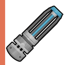 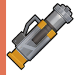 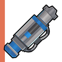
喷射类: 包括喷火器/寒冰喷雾/喷油枪/喷水枪, 喷射类武器其实无法造成直接伤害, 但是它们可以给敌人施加元素效果, 当两个不同的元素效果相互叠加, 还可以造成影响更大的Debuff, 也就是说, 喷射类武器其实更多的时候是用来打配合或控场的, 而当它们单独存在时, 意义就非常有限了, 一般是明确想制造出某种元素效果才会装备它们, 如果你想了解元素效果或叠加细节, 可以参阅 术语提示.html;
————
 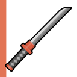
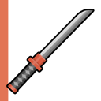
近战类: 包括动力拳/高能拳套/光剑/光子薙刀/光矛/光枪/光戟/电光斧/高能电光斧/电子胁差, 实际上近战武器还可以再细分为拳套/刀剑/枪矛/战斧等, 但这种细分仅影响少数配件的安装, 实际意义就不是很大, 尽管近战武器的攻击可无视护甲护盾, 但由于近战的操作难度较高, 除非是玩家想自我挑战, 否则一般还是会以远程手段为主, 所以这里也不再深入了, 如果你开始研究近战, 那也就不算新手了;
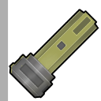 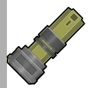 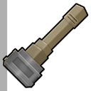 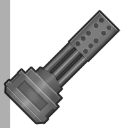 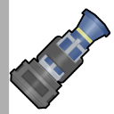 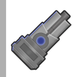 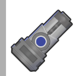
肩扛类: 包括肩扛火炮/重型肩扛火炮/肩扛航炮/重型肩扛航炮/肩扛火箭炮/重型肩扛火箭炮/肩扛电磁脉冲炮/重型肩扛电磁脉冲炮, 肩扛类武器过去是属于挂件, 但现在已被拆分出来作为单独的一个武器类别, 尽管它们也有槽位数量的区别, 但它们不像常规武器, 机体的装备数量是固定的(主力战机可装备两台, 作战单元只能装备一台), 槽位仅影响配件的最大安装数量, 总之, 它们是很不错的辅助装备;
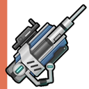 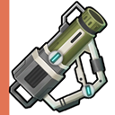 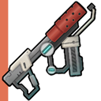 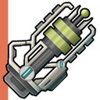 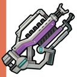
终极类: 包括治疗枪/高斯狙击步枪/磁轨炮/熔岩喷雾/炼狱射线/雷神焚天炮, 终极类武器是部分武器的终极形态, 它们并不是由低级武器升级而来, 而是以多种武器加上核心为材料, 在合成界面被制作出来的(治疗枪除外, 它是科罗库的忠诚度奖励, 无法制造, 只能购买), 终极武器往往被玩家们当作"毕业武器", 因为它们的面板参数都比较高, 但请不要盲信, 它们是沉重且昂贵的, 你能承受这些代价吗?
————
在武器的选择上, 其实并没有所谓的对错, 每种武器都有它适用的场景, 由于武器还可以通过配件来实现强化, 所以只要搭配得当, 它们都是能发挥巨大作用的, 因此, 请不要给自己设限, 尝试根据场景需求和铁骑特点, 合理做出选择, 挖掘武器特性, 这本身也是游戏的一种乐趣, 当然, 你最好是在游刃有余的情况下再进行探索, 因为有些场景的难度较高, 资源也不够丰富, 胡乱投资武器, 可能影响通关;
03. 配装案例
游戏为武器提供了上百种不同的配件, 而配件又可被分为普通配件与融合配件, 它们能增强武器在某方面的参数, 或为武器提供额外的特性, 装备多意味着玩法丰富, 但也很容易导致新手因选择过多而头晕目眩, 你当然可以自行探索不同的搭配, 但如果图省事, 也可以参考以下几个现成的配置, 等熟悉系统后, 再进行其它尝试, 关于普通配件和融合配件的详情, 可以查阅 武器配件.html 和 武器融合.html;
————
武器名称: 散弹枪;
槽位数量: 普通 10, 融合 08 / 归属种类: 动能, 散弹;
武器优势: 廉价, 初期可得, 杀伤范围大 / 短板缺陷: 破甲低, 射击间隔与换弹时间较长;
普通
配件
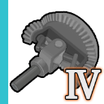
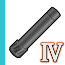
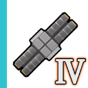
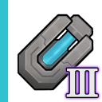
融合
配件
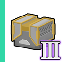
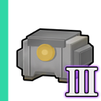
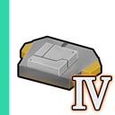
Rest
× 02
该配置可作为所有散弹武器的参考, 散弹枪杀伤范围大, 对小体积或敏捷型敌人有优势, 但缺点是子弹破甲能力不足, 针对该劣势, 可以通过为武器装配"冰冻模块"和"火焰模块", 让子弹给敌人施加寒冷和燃烧效果, 当这两种效果并存时, 会转换成装甲融化, 能减少敌人 80% 的护甲, 如果还能再降低输出间隔, 就堪称完美了, 值得一提的是, 初期如果缺乏破甲手段, 可靠近敌人贴脸射击, 用子弹数堆伤害;
————
武器名称: 冲锋枪;
槽位数量: 普通 08, 融合 10 / 归属种类: 动能, 导轨;
武器优势: 轻巧, 初期可得, 射击速度极快 / 短板缺陷: 子弹的伤害过低, 穿甲能力不足;
普通
配件
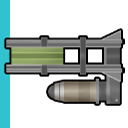
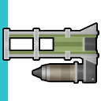
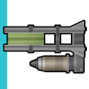
融合
配件
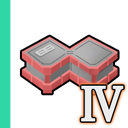
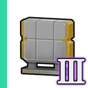
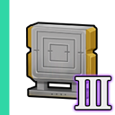
该配置可作为所有冲锋武器的参考, 冲锋枪A2轻巧且槽位需求低, 适用于作战单元和机枪炮塔, 由于伤害与穿甲能力都不行, 因此可忽视直接输出, 转而为武器装配导轨专属的榴弹配件, 借助极高射速和大额弹夹, 可实现每秒都有榴弹被抛出, 而榴弹会造成无视护甲的范围性爆炸伤害, 就可以弥补武器的缺点, 值得一提的是, 融合散弹武器后, 如果榴弹抛出那发子弹触发了散弹效果, 则榴弹也会变成多颗;
————
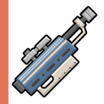
武器名称: 轻型狙;
槽位数量: 普通 10, 融合 09 / 归属种类: 动能, 狙击;
武器优势: 轻巧, 射程较远, 槽位需求自由 / 短板缺陷: 单发, 需精确瞄准, 弹夹容量低;
普通
配件
融合
配件
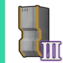
该配置可作为所有狙击武器的参考, 轻型狙单体伤害高, 射程范围远, 对重甲和大型敌人有优势, 但缺点是需要精确瞄准, 针对这个问题, 可以通过融合霰弹类武器来获取散弹发射的能力, 在最高级的融合配件加持下, 它有概率可以每发射出八颗子弹, 扇形攻击范围有助于对付小体积的敏捷型敌人, 这样的一把武器, 是完全足够用到大决战的, 如果是用在无人机上, 也可改装尖头弹, 进一步提升攻击范围;
————
武器名称: 轻机枪;
槽位数量: 普通 15, 融合 06 / 归属种类: 动能, 机枪;
武器优势: 射速快, 射程远, 弹夹容量较高 / 短板缺陷: 沉重, 装弹时间长, 槽位需求高;
普通
配件
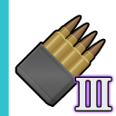
Rest
× 02
融合
配件
该配置可作为所有机枪武器的参考, 轻机枪对机体速度影响较低, 大额弹夹能实现连续开火, 可形成有效的火力压制, 但缺点是换弹时间超长, 输出存在空档, 对此可利用剩余槽位, 多装两个低等级的"换弹模块", 再为机体安装"快速供弹匣"的机体改造模块, 重点提升驾驶员换弹能力, 为驾驶员装备能减少换弹时间的"玉稳定框架"饰品, 通过这些优化, 将换弹时间压到极限, 只要火力不中断, 就无所畏惧;
————
武器名称: 雷神炮;
槽位数量: 普通 18, 融合 09 / 归属种类: 远程, 电弧;
武器优势: 威力大, 自动追踪, 范围性攻击 / 短板缺陷: 沉重, 易老化, 对护盾会有减伤;
普通
配件
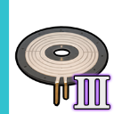
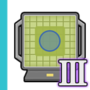
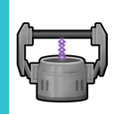
Rest
× 07
融合
配件
 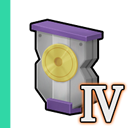
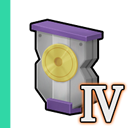
 Rest
Rest
× 01
该配置可作为所有电弧武器的参考, 雷神焚天炮是电弧类武器的终极答案, 高伤害且自动瞄准, 用起来就格外省心, 但它也沉重且易老化, 所以需要针对性地优化, 可通过多装几个高级的"速度模块"和"转轴模块"以解决减速问题, 其次是安装"维护模块"并提升角色的武器维护能力以降低老化率, 最后是融合"射线类武器"得到"电弧折返核心"以提升护盾伤害, 或多装几个"快子跃迁模块"增大穿透护盾的概率;
————
在武器的装配上, 前面这五个案例提供了一个基本概念, 如果感到迷糊, 那么照抄即可, 说到底无非就是优先保障伤害与破甲, 剩下的就是填补短板了, 因为武器是木桶效应, 战场的环境瞬息万变, 你需要的是通用性方案, 而不是一味的加强优势, 尽管理想的情况是多准备几套武器, 再根据场景适配, 但你的资源未必能有这么富余, 临场切换装备的操作也略显繁琐, 所以弄把均衡可靠的武器, 总是没错的;
04. 建议装备
我方可控制的铁骑, 数量虽不多却各有特点, 而驾驶员们也有自己的作战风格, 所以选用合适的武器也颇为重要, 下面将进行简单的推荐, 基本原则是, 尽量选槽位数量相符的武器, 因为槽位的多少决定了武器的上限, 低了是浪费, 高了则未必装得上, 两把低槽位武器未必会比一把高槽位武器有用, 因此双持也是个选项, 关于铁骑的性能和驾驶员的能力等细节, 可以查阅 机体详情.html 和 主角小队.html;
————
名称: 游骑兵号(玛 丽);
槽位: 远程.左手10/右手10, 近战.左手05/右手05;
特点: 左右手槽位均衡, 推荐使用两把相同的武器, 装配起来简单, 也无需区分射击距离, 同时开火可造成双倍伤害;
轻型狙: 最高级的槽位需求正好为 10, 融合散弹武器可实现范围伤害;
散弹枪: 最高级的槽位需求正好为 10, 面对重甲, 可贴近敌人射击, 依靠子弹数量也能形成有效输出;
冲锋枪: 最高级需要 12 槽位, 可通过安装武器扩展槽B适配, 再配合导轨相关配件, 利用极限射击速度抛出各种榴弹, 轰炸将连绵不绝;
————
名称: 骠骑兵号(库罗库);
槽位: 远程.左手12/右手06, 近战.左手12/右手05;
特点: 左右手槽位失衡, 右手难以使用高伤害武器, 到不如直接放弃(或持盾), 改为双持终极武器, 单发更比双发强;
雷神焚天炮: 槽位需求为 18, 双持正好能适配(12+6), 只是成型较晚;
制式步枪+制式步枪B1: 最高级正好分别需要 12/6 槽位, 步枪虽不起眼, 但搭配得当, 输出也很可观;
磁轨炮+寒冰喷雾: 最高级分别需要 15/9 槽位, 可通过安装武器扩展槽AB来适配(12+3/6+3), 冻住再进行轰炸, 敌人就没闪避的余地了;
————
名称: 龙骑士号(桑/San);
槽位: 远程.左手06/右手05, 近战.左手12/右手12;
特点: 远程槽位的数量非常少, 是更倾向于近战的, 但通过安装武器扩展槽AB, 配合高敏捷的性能, 实战也毫不逊色;
速射炮: 最高级的槽位需求为 11, 正好双持, 再融合散弹可保证输出;
轻机枪: 可安装武器扩展槽B, 槽位变成 15(6+2+5+2), 刚好能实现双持, 高机动高火力, 平衡性极佳;
破甲步枪+老式步枪A1: 最高级分别需要 9/8 槽位, 可通过安装武器扩展槽AB来适配(6+3/5+3), 尽管伤害有限, 但可通过元素效果取胜;
————
名称: 弓骑兵号(赭石色);
槽位: 远程.左手18/右手05, 近战.左手05/右手05;
特点: 左手槽位数超高, 几乎就是为终极武器准备, 建议是直接双持终极武器, 如果速度允许, 右手可以装个防爆盾;
雷神焚天炮: 槽位需求为 18, 左手刚好适配, 不嫌重则右手可装个盾;
高斯狙击步枪: 安装武器扩展槽A, 双持了就是 25 槽位, 这是单体伤害最高的武器, 要注意它的跳弹;
炼狱射线+冲锋枪A2: 最高级分别需要 21/8 槽位, 可通过安装武器扩展槽AB来适配(18+3/5+3), 轻便的冲锋枪A2可在射线的冷却期输出;
————
名称: 圣骑士号(克莱尔);
槽位: 远程.左手12/右手12, 近战.左手08/右手05;
特点: 是所有铁骑中槽位合计数最高的, 所以实际的伤害上限也最高, 但速度也最为迟缓, 别指望有什么敏捷性可言;
熔岩喷雾+冲锋枪: 最高级刚好是 12 槽位, 融化装甲了就能顺利输出;
轻机枪: 最高级需要 15 槽位, 可通过安装武器扩展槽A+B来进行适配, 双持即可实现火力的连续压制;
重机枪: 最高级需要槽位 15, 类似轻机枪但输出更高, 不过对速度的影响非常大, 开火还会强制蹲据, 该方案就是放弃机动, 成碉堡了;
————
限于篇幅, 此处仅做了主力机体的远程武器内容, 近战就略过了, 因为近战操作对新手而言, 难度较高而输出却相对有限, 更重要的原因是, 任意武器的装备都会降低铁骑的移动速度和转向速度, 如果坚持要把近战武器也搭配到极限, 就需要耗费更多的机体配件槽位来解决速度问题, 这样一来铁骑在其他方面就会有所不足, 反而会导致总体的强度下降, 因此大多数玩家都只会选配一套武器, 而不是全都要;
05. 其他配件
铁骑的装备当然不止于武器, 还有各种用于不同部位的机体配件, 它们的数量与种类也非常多, 既有用于提高防御的护甲, 也有用于提高速度或抗性的改装, 乃至于夜战照明的灯具和各式各样的投掷炸弹, 与武器相比, 它们的安装并没有槽位的限制, 但是不同的机体不同的部位, 可安装的配件数量也是不同的, 下面我们将根据安装部位的区分, 做一个简单的宏观介绍, 让你对这些装备能有一个大概的认识;
————


主体强化: 主要是提升机体的 HP 和各种防御, 包括动能武器穿甲抵抗, 高爆武器防爆能力, 元素效果伤害减免等等, 上表中的前七个几乎是必装模块, 其余的就根据需要安排了, 值得一提的是, 其中的"无人机强化模块"是唯一能提升无人机属性的配件, 不过它会扣减主机 HP, 如果不走无人机流就没必要装, 铁骑可安装的数量可查阅 机体详情.html(P02:主体上限), 配件的更多细节可查阅 主体强化.html;
————
足部强化: 主要是提升机体的速度, 包括移动速度和转向速度, 其中又以"速度模块"和"转轴模块"最为重要的, 因为可以消除由装备所导致的减速, 尤其是当你使用了沉重武器, 可能需要装备多个这种模块来抵消影响(配件不可以被重复安装, 但不同等级的不算重复), 除此外的其它足部配件就不是很关键了, 铁骑可安装的数量可查阅 机体详情.html(P02:足部上限), 配件的更多细节可查阅 足部强化.html;
————

机身挂件: 机体都拥有八个常规挂件槽位和两个头部挂件槽位, 常规挂件是有方向性的, 如装在铁骑正前方的护甲就只保护身前 45°, 部分挂件还拥有独立的 HP, 如果它们被打爆则本场战斗就不再生效, 但下次战斗前会自动修复(免费), 一般都是身前装护甲挂件, 身后装速度挂件, 再正面对敌以兼顾防御速度, 但如果你对走位有信心, 也可以放弃护甲, 全堆速度, 配件的更多细节可查阅 机身挂件.html;
————

机体改造: 所有的主力机体都拥有六个改造槽位, 但其中的两个已经被铁骑自带的配件所占据, 而且这些自带的配件几乎都是不可拆卸的, 因此可供操作的槽位就只剩下了四个, 机体改造的配件类型也非常丰富, 既有用于扩展武器槽位, 也有用于降低脑负荷或提升铁骑对某种武器的防护, 总而言之, 它们大多都很有用, 但部分配件安装了就无法拆卸, 因此务必慎重, 配件的更多细节可查阅 机体改造.html;
————
投掷物品: 既有杀伤力巨大的集束弹或破片手雷, 也有施加元素效果的水炸弹和油炸弹, 以及用于辅助的烟雾弹或照明弹, 最为重要的是, 它们在战场上并非一次性的消耗品, 而是在丢出后等 CD 完结还可以继续使用, 且没有任何使用的成本, 是非常棒的辅助输出手段, 主力机体和作战单元都能够安装它们, 铁骑可安装的数量可查阅 机体详情.html(P02:投掷上限), 配件的更多细节可查阅 投掷物品.html;
————
尽管机体配件的重要性和优先级不如武器, 毕竟攻击才是最好的防御手段, 但一台战力强劲的铁骑也离不开以上这些配件的辅助, 如果你一时觉得琳琅满目难以选择, 那么可以采用补短板的方式, 既角色铁骑缺什么就装什么的, 觉得肉度不够, 就装防御相关配件, 觉得行动迟缓, 就装速度相关配件, 觉得输出乏力, 就装高伤害的投掷物品, 在弥补了不足之后, 再考虑根据作战需求, 针对性强化某方面能力;
06. 战略支援
可以在整备城防的界面中, 安排来自空中的战略支援, 这些支援又可被分为两大类, 既辅助类型和攻击类型, 安排完毕后在战场上按 Tab, 打开战略界面即可调用这些支援, 也可用快捷键既字母键盘上方的数字来调用, 这些支援和投掷物品类似, 都是等 CD 完结后, 就能被重新调用, 不过使用它们需要以战后的荣誉收益为代价, 下面我们将根据类型区分, 做个简单的宏观介绍, 让你对它们能有大概的认识;
————

辅助类型: 包括空投路障/烟雾弹/照明弹/汽油弹/电磁炸弹/液氮炸弹/纳米修复机器人, 空中支援有很大一部分是无法被制造的, 它们大多来自于某位驾驶员的忠诚度奖励, 有时在商店中也会出现, 如果看到了可以考虑购入, 尤其是纳米修复机器人, 这是最为实用的战略支援, 可恢复铁骑的 5000 的 HP, 在挑战一些困难的外勤任务很有帮助, 但注意别装"纳米合金"的机体改造配件(会让治疗效果仅剩 1/5);
————


攻击类型: 包括空袭扫射/空投地雷/空投云爆弹/空袭破片炸弹/破甲弹轰炸/空袭轰炸/空投机枪塔单位等, 这些都是能给予敌人大量伤害的手段, 只是在破甲和杀伤范围方面有所区别而已, 你可以根据要攻击的敌人类型调用合适的支援, 而其中的空投机枪塔单位, 其实就是丢一个枪塔到战场中, 它携带着轻机枪作为武器(你无法改变它的装备), 最好别指望它的输出, 更多时候它是充当吸引敌军火力的沙包;
————
因为战略支援的费用会从战后荣誉收益里扣除, 所以有不少玩家都不舍得用, 但有时它们真的是破局的好手段, 所以不要忽视的战略支援的安装, 也不要过于吝啬那么些荣誉值, 该调用的时候就尽管调用吧, 值得关注的是, 战略支援的 CD 还会受到天气的影响, 雨天的情况下 CD 会被进一步延长(挺合理的), 但天气状况不影响战略支援的费用(费用的算法和 CD 时长挂钩), 更多细节可查阅 战略支援.html;
07. 城防体系
可以在整备城防的界面中, 安排城防设施以抵御敌人的进攻, 这些设施又可被分为两大类, 既静态辅助类的城防物障和动态进攻类的作战单位, 在大多数防守性质的阵地战中(例如守城或护送运输队), 这些设施就会出现在战场上, 尽管可安放这些设施的"城防点"和"部署点"是有数量限制的, 但通过合理配置, 也可发挥巨大作用, 下面我们将根据类型区分, 做个简单的宏观介绍, 让你对它们能有大概的认识;
————
城防物障: 包括可以阻挡子弹的沙包, 对敌人造成伤害的地雷, 吸引敌军火力的路障, 减缓速度的铁丝网等物, 而它们但当中又以不起眼的沙包最为好用, 因为沙包是区分正反面的, 从正面射来的子弹, 必须对沙包实现穿甲, 才能打到位于沙包后的我方单位, 而最高级的沙包穿甲抵抗高达 100, 对动能武器有非常好的防御作用, 蹲守于沙包后方的机体, 生存率会高上许多, 更多细节可查阅 城防设施.html;
————

作战单位: 包括主力机体/作战单元/机枪炮塔/照明路灯, 其中的主力机体和作战单元是有最大上场数限制的, 默认情况下你只能派 2 台主力机体和 1 台作战单元上场(通过思潮奖励和驾驶员忠诚奖励可提升上限), 而机枪炮塔和照明路灯则没有数量上限, 不过城防系统总共也就提供了 8 个部署点给我们安排作战单位, 机枪炮塔也不能移动, 所以它们的帮助就没那么大了, 更多细节可查阅 机体详情.html;
————
你应该重视城防物障, 尤其是沙包, 它们的作用会远超你的想象, 即便战场压力没那么大, 为铁骑减少一些损伤, 也能起到节约维修费的作用, 而作战单元和机枪炮塔的作用就相对有限了, 或者说它们的优先级没那么高, 因为作战单元不能被单独派出去执行任务, 你也不能操控它们, 而机枪炮塔不能移动, 很容易成为活靶子, 所以建议是先武装好主力机体, 在装备有富余的情况下, 再考虑提升其它的单位;
08. 战场地形
在剧情模式中, 我们的正面战场都是守在城门前歼灭来犯的敌军, 但实际上大门并不止一座(防守的小队在剧情设定上也不止一支), 玛丽所带领的小队会根据敌军攻势而在这些城门口轮流进行驻防, 门外的场景也会跟随着变化, 目前常见的有以下八个不同的地图, 每隔一段时间, 我们就可以选择切换到别的地图去(随机二选一), 无尽模式也是使用这套地图, 虽然对战局影响也不是很大, 但了解一下也不坏;

01. 职工活动区大门(MapType1): 此区域有众多被毁民用建筑, 可以迟滞敌人的进攻, 但也可能会影响我方的视野和弹道;
02. 中转站前大门(MapType2): 此区域有条被摧毁的补给线, 道路上被摧毁的战车可以作为掩体, 但其他掩体少;
03. 职工宿舍大门(MapType3): 此区域有众多被毁民用建筑, 可以作为掩体, 但也可能成为敌人的掩体;
04. 第四号大门(MapType4): 此区域地形开阔, 视野非常好, 但是掩体也少, 敌人将长驱直入;
05. 炼油厂大门(MapType5): 此区域有大量油管线, 但油管质量不太好, 会喷出油来;
06. 冷却厂大门(MapType6): 此区域有大量水管线, 但水管质量不太好, 会喷出水来;
07. 发电厂大门(MapType7): 此区域有高压输电线, 但电线质量不太好, 总是会漏电;
08. 精炼厂大门(MapType8): 此区域有大量管线, 但管线质量不太好, 会喷出水和油;
————
以下的几张地图主要是用于挑战模式, 但它们同时也会用在某些外勤任务中, 实际上除了这里罗列出来的地图, 还有其他一些地图是用于护送任务和外勤歼灭, 甚至是潜入模式也有特殊的地图, 只是地图内容都是程序动态生成的, 游戏里也没有提供现成的预览截图, 有些地图的尺寸还非常大, 截图后得进行许多合并, 由于雾气和敌人等因素还会干扰合并, 实在是很费劲, 因此 XJ 就偷个懒, 不逐一展示了;
01. 一号战区(MapTypeChan2): 此区域有众多被毁民用建筑, 可以迟滞敌人进攻, 但也可能会影响自己;
02. 二号战区(MapTypeChan3): 此区域有众多被毁民用建筑, 可以作为掩体, 但也可能成为敌人的掩体;
03. 三号战区(MapTypeChan4): 此区域有条被摧毁的补给线, 被摧毁的战车可作为掩体, 但其他掩体少;
04. 四号战区(MapTypeChan5): 此区域地形开阔, 视野非常好, 但是几乎没有掩体, 有些战术无法施展;
09. 天气系统
战场除了白昼和黑夜的时间区别, 其实还有天气的阴晴随机状态, 它们很可能也会对战局造成影响, 在阴晴的状态上, 系统会根据场景设定的参数, 在范围里取一个随机数, 这个范围值介于 -100 到 100 之间, -60 以下是暴晒, -60 ~ -30 是烈日, -30 ~ 0 是炎热, =0 是晴朗, 0 ~ 30 是小雨, 30 ~ 60 是中雨, 60 以上是暴雨, 非晴朗时敌我双方机体均会附加高温或潮湿 Debuff, 甚至影响战略武器 CD;
01.白昼: 白天没什么特殊的机制, 只要不是下雨, 视野都会很好, 但无论何时, 战场上总会有些迷蒙的雾气, 那大概是被风卷起的沙尘;
02.黑夜: 夜晚的可见度非常低, 如果没装照明设备, 则视野就仅限铁骑前方的一小块地了, 你可能需要频繁打开战略界面以查看敌人的位置, 当然你也可以在机体挂件的槽位上安装照明配件, 或是在整备城防的界面安置各种照明设施, 这样就不会陷入敌暗我明的险境了;
03.暴晒: 炎热天气, 敌我双方都会自动获得高温的状态, 温度越高, 获得状态的间隔就会越频繁, 高温将会导致机体的爆炸抗性减 80%, 如果此时被施加了其他状态, 大概率会引起爆炸, 造成伤害并且眩晕, 所以你除了要提防敌人的攻击, 还得注意战场上各种破损的管道;
04.暴雨: 在雨天时, 敌我双方的机体都会自动获得潮湿的状态, 雨下越大, 获得状态的间隔就会越频繁, 潮湿会导致机体被子弹击中时, 受到暴击的概率翻倍, 在潮湿状态下遭遇了除油腻以外的状态, 都会发展为叠加状态, 如果遭遇的是油腻, 则会触发清晰状态, 此时造成异常状态会无效化, 雨天给自己丢个油炸弹倒也是解除异常的一种办法, 如果你想了解元素效果或叠加细节, 可以参阅 术语提示.html;
————
除了白昼和黑夜, 其实在幸存模式里或无尽模式的决战中, 还有更多的时间状态, 例如黄昏和黎明, 甚至黑夜也有可见度变化, 你也可以将其理解为入夜/深夜/凌晨, 每个时间状态会持续一两个关卡, 只不过除了战场可见度的区别以外, 倒也没有其他什么影响了, 但这只是看似有时间变化, 实际上你一直在某天循环, 因为常规情况下复制装备, 第二天价格会回归初始值, 但幸存模式的初始值是不会回归的;
10. 特殊战法
在剧情模式或无尽模式里, 如果你觉得战斗过于冗长或无趣, 可以尝试将铁骑都委托给 AI(剧情模式下从第 7 天开始才能这么做), 尤其是在使用单发武器的情况下, 因为 AI 会比我们瞄得更准, 我们只要做好运营, 然后在战场上按住 Alt 加速即可, 当然对于一些外勤或 Boss, AI 可能无法顺利完成任务, 此时才需要我们介入, 下面推荐两种"逃课"的打法, 如果觉得某些敌人太难对付, 也许可以参考一下;
光学隐身模块 + 高斯狙击步枪 : 高斯狙击步枪是游戏中单体伤害最高的武器, 只是弹夹容量只有 1, 且装弹时间非常久, 开枪还会导致机体强制蹲据, 光学隐身模块可让机体蹲据后进入隐身状态, 只要没被附加 Debuff, 敌人就无法发现我们, 这两者相互配合, 堪称完美(你可能还需要再安装"全天候装甲", 避免恶劣天气导致隐身失效);
光学隐身模块 + 近战链锯 : 近战链锯可以给靠近的敌人造成每秒一百点的直接伤害, 由于它属于挂件, 所以你可以在身前同时装三把(伤害×3), 进入战场后直接蹲据, 然后与敌人贴贴即可, 如果再安装"全天候装甲", 避免暴晒导致高温或暴雨导致潮湿, 就更加万无一失了, 只是这个伤害对一些高 HP 的敌人会非常刮痧, 可能需要打很久;
————
毕业结语: 如果你已经看完了新手指南的三个篇章, 那你现在已经是个具备系统理论的铁骑驾驶员了, 但请不要自满, 因为作战与指挥的领域是无边无际的, 你还需要更多的实践, 希望在未来的日子里, 你能继续保持军人本色, 勇敢无畏, 忠诚担当, 无论遇到什么困难和挑战, 都要坚定信念, 勇往直前, 愿你在军营中书写壮丽篇章, 在战场上铸就辉煌成就, 那最后, 请起立, 敬个礼, 下课啦 (*￣▽￣*)ゞ;